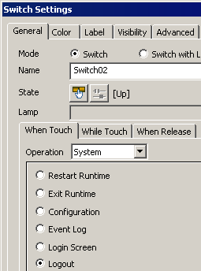

|
|
|
|
|
|
|
|
The Inactivity Time-Out logs a user out of a target machine after a period of inactivity.
To set up Inactivity Time-Out:
Target Security must be enabled to configure Inactivity Time-Out, see Section 4.8.7, Security Settings.
In the Security node's properties, click the Inactivity Time-Out check box and define the time in minutes.
A switch can log a user out of the target machine.
To create a Logout switch:
Create a switch, select System for the Operation, and select Logout.

A Toolchest part can log a user out of a target machine.
To add the Toolchest Logout part to your project:
Drag the Logout part from the Toolchest Security folder and drop it onto a panel or popup window.
A script system method is available to log a user out of the target machine.
Sys.logout();
See Section 18.9.1.5, System Methods (Sys.logout).